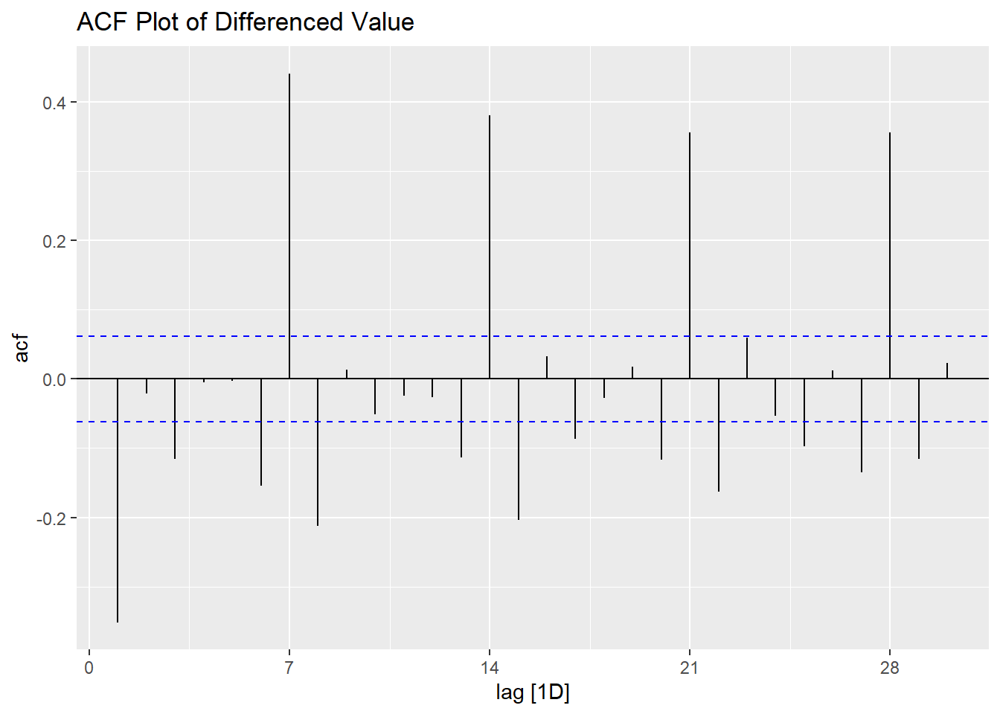
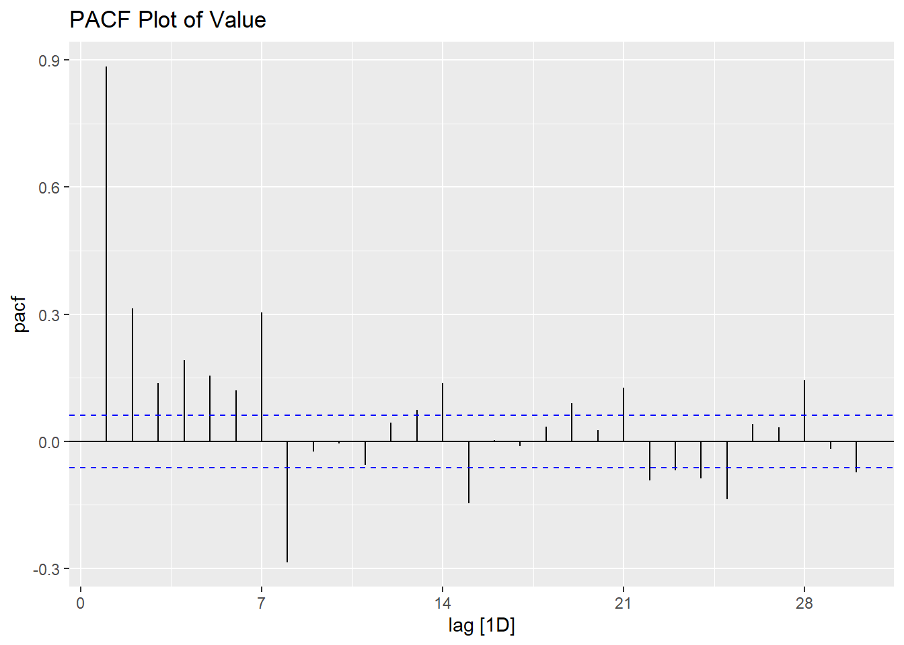

library(tidyverse)
library(fable)
library(tsibble)
library(lubridate)Help Session: In-class Hackathon and Forecasting Competition
| Component | Identification from Plot | Rule / Recommendation |
|---|---|---|
| AR order (p) | PACF significant spikes at lags 1,2… | Number of significant spikes in PACF |
| MA order (q) | ACF significant spikes at lags 1,2… | Number of significant spikes in ACF |
| Seasonal AR (P) | PACF spike at seasonal lag (s, 2s, …) | Number of significant seasonal spikes |
| Seasonal MA (Q) | ACF spike at seasonal lag (s, 2s, …) | Number of significant seasonal spikes |
| Differencing (d) | Trend in series → difference once | Use ndiffs() in R |
| Seasonal diff(D) | Seasonal pattern → seasonal difference | Use nsdiffs() in R |
| Model | ACF Behavior | PACF Behavior |
|---|---|---|
| AR(p) | Tails off gradually | Cuts off after lag p |
| MA(q) | Cuts off after lag q | Tails off gradually |
| ARMA(p,q) | Tails off gradually | Tails off gradually |
Additional reading
https://chih-ling-hsu.github.io/2017/03/20/time-series
Packages
Read Data
library(readr)
train <- read_csv("train.csv")Rows: 1035 Columns: 3
── Column specification ────────────────────────────────────────────────────────
Delimiter: ","
chr (1): Date
dbl (2): ID, Value
ℹ Use `spec()` to retrieve the full column specification for this data.
ℹ Specify the column types or set `show_col_types = FALSE` to quiet this message.#View(train)
train# A tibble: 1,035 × 3
ID Date Value
<dbl> <chr> <dbl>
1 1 01.01.2023 2246
2 2 02.01.2023 3633
3 3 03.01.2023 2982
4 4 04.01.2023 2694
5 5 05.01.2023 3512
6 6 06.01.2023 3035
7 7 07.01.2023 2773
8 8 08.01.2023 2912
9 9 09.01.2023 3806
10 10 10.01.2023 3239
# ℹ 1,025 more rowsConvert data into tsible
library(dplyr)
train |>
group_by(Date) |>
summarise(n = n()) |>
filter(n > 1)# A tibble: 2 × 2
Date n
<chr> <int>
1 30.05.2024 2
2 31.05.2024 2duplicates_with_counts <- train |>
group_by(Date) |>
filter(n() > 1) |> # Keep only dates that appear more than once
mutate(count = n()) |> # Add a column showing how many times this date appears
ungroup() |>
arrange(Date)
duplicates_with_counts# A tibble: 4 × 4
ID Date Value count
<dbl> <chr> <dbl> <int>
1 516 30.05.2024 3257 2
2 881 30.05.2024 4528 2
3 517 31.05.2024 3463 2
4 882 31.05.2024 4318 2# Correct the dates for rows 881 and 882
train <- train %>%
mutate(Date = case_when(
ID == 881 ~ "30.05.2025",
ID == 882 ~ "31.05.2025",
TRUE ~ Date
))train |>
group_by(Date) |>
filter(n() > 1) |> # Keep only dates that appear more than once
mutate(count = n()) |> # Add a column showing how many times this date appears
ungroup() |>
arrange(Date)# A tibble: 0 × 4
# ℹ 4 variables: ID <dbl>, Date <chr>, Value <dbl>, count <int># --- Convert to tsibble ---
df_ts <- train |>
mutate(Date = dmy(Date)) |> # Convert "01.01.2023" to Date format
as_tsibble(index = Date)
df_ts# A tsibble: 1,035 x 3 [1D]
ID Date Value
<dbl> <date> <dbl>
1 1 2023-01-01 2246
2 2 2023-01-02 3633
3 3 2023-01-03 2982
4 4 2023-01-04 2694
5 5 2023-01-05 3512
6 6 2023-01-06 3035
7 7 2023-01-07 2773
8 8 2023-01-08 2912
9 9 2023-01-09 3806
10 10 2023-01-10 3239
# ℹ 1,025 more rowsSplit data to training and test
# Find the last date
last_day <- max(df_ts$Date)
# First day of the last month
first_test_day <- floor_date(last_day, "month")
# Split
train <- df_ts %>% filter(Date < first_test_day)
test <- df_ts %>% filter(Date >= first_test_day)
head(train)# A tsibble: 6 x 3 [1D]
ID Date Value
<dbl> <date> <dbl>
1 1 2023-01-01 2246
2 2 2023-01-02 3633
3 3 2023-01-03 2982
4 4 2023-01-04 2694
5 5 2023-01-05 3512
6 6 2023-01-06 3035tail(train)# A tsibble: 6 x 3 [1D]
ID Date Value
<dbl> <date> <dbl>
1 999 2025-09-25 4666
2 1000 2025-09-26 5891
3 1001 2025-09-27 6150
4 1002 2025-09-28 5588
5 1003 2025-09-29 4959
6 1004 2025-09-30 5339head(test)# A tsibble: 6 x 3 [1D]
ID Date Value
<dbl> <date> <dbl>
1 1005 2025-10-01 6751
2 1006 2025-10-02 6021
3 1007 2025-10-03 6146
4 1008 2025-10-04 5802
5 1009 2025-10-05 4847
6 1010 2025-10-06 4478tail(test)# A tsibble: 6 x 3 [1D]
ID Date Value
<dbl> <date> <dbl>
1 1030 2025-10-26 5618
2 1031 2025-10-27 4583
3 1032 2025-10-28 5577
4 1033 2025-10-29 5028
5 1034 2025-10-30 5216
6 1035 2025-10-31 6515library(feasts)
train |>
autoplot(Value)
train |>
ACF(Value) |>
autoplot() +
labs(title = "ACF Plot of Value")
train |>
PACF(Value) |>
autoplot() +
labs(title = "PACF Plot of Value")
train |>
mutate(Value_diff = difference(Value)) |> # Take first difference
ACF(Value_diff, na_action = "omit") |> # Compute ACF
autoplot() +
labs(title = "ACF Plot of Differenced Value")Warning: The `...` argument of `PACF()` is deprecated as of feasts 0.2.2.
ℹ ACF variables should be passed to the `y` argument. If multiple variables are
to be used, specify them using `vars(...)`.Warning: ACF currently only supports one column, `Value_diff` will be used.
forecast::findfrequency(train)Registered S3 method overwritten by 'quantmod':
method from
as.zoo.data.frame zoo [1] 7sarima_auto <- train |>
model(
auto = ARIMA(Value ~ pdq() + PDQ(period = 7))
)
# View model summary
report(sarima_auto)Series: Value
Model: ARIMA(2,1,2)(0,0,2)[7]
Coefficients:
ar1 ar2 ma1 ma2 sma1 sma2
-0.0570 0.3088 -0.4037 -0.4191 0.3404 0.1705
s.e. 0.1963 0.0802 0.1981 0.1643 0.0331 0.0287
sigma^2 estimated as 494379: log likelihood=-7996.06
AIC=16006.11 AICc=16006.22 BIC=16040.49Forecast for test period
h_test <- nrow(test)
fc <- sarima_auto |>
forecast(h = h_test)
fc# A fable: 31 x 4 [1D]
# Key: .model [1]
.model Date
<chr> <date>
1 auto 2025-10-01
2 auto 2025-10-02
3 auto 2025-10-03
4 auto 2025-10-04
5 auto 2025-10-05
6 auto 2025-10-06
7 auto 2025-10-07
8 auto 2025-10-08
9 auto 2025-10-09
10 auto 2025-10-10
# ℹ 21 more rows
# ℹ 2 more variables: Value <dist>, .mean <dbl>fc |> knitr::kable()| .model | Date | Value | .mean |
|---|---|---|---|
| auto | 2025-10-01 | N(5009, 494379) | 5009.223 |
| auto | 2025-10-02 | N(5094, 638210) | 5093.529 |
| auto | 2025-10-03 | N(5444, 740669) | 5443.752 |
| auto | 2025-10-04 | N(5586, 790603) | 5585.582 |
| auto | 2025-10-05 | N(5354, 834997) | 5354.195 |
| auto | 2025-10-06 | N(5178, 867971) | 5178.438 |
| auto | 2025-10-07 | N(5324, 9e+05) | 5324.475 |
| auto | 2025-10-08 | N(5218, 1068049) | 5218.398 |
| auto | 2025-10-09 | N(5208, 1157655) | 5207.563 |
| auto | 2025-10-10 | N(5407, 1234097) | 5407.331 |
| auto | 2025-10-11 | N(5416, 1293478) | 5415.811 |
| auto | 2025-10-12 | N(5397, 1350356) | 5396.533 |
| auto | 2025-10-13 | N(5295, 1402641) | 5294.741 |
| auto | 2025-10-14 | N(5313, 1454451) | 5312.829 |
| auto | 2025-10-15 | N(5309, 1573163) | 5308.907 |
| auto | 2025-10-16 | N(5315, 1656778) | 5314.855 |
| auto | 2025-10-17 | N(5313, 1734153) | 5313.305 |
| auto | 2025-10-18 | N(5315, 1802634) | 5315.230 |
| auto | 2025-10-19 | N(5315, 1869835) | 5314.642 |
| auto | 2025-10-20 | N(5315, 1934496) | 5315.270 |
| auto | 2025-10-21 | N(5315, 2e+06) | 5315.052 |
| auto | 2025-10-22 | N(5315, 2062574) | 5315.258 |
| auto | 2025-10-23 | N(5315, 2126202) | 5315.180 |
| auto | 2025-10-24 | N(5315, 2189598) | 5315.248 |
| auto | 2025-10-25 | N(5315, 2252998) | 5315.220 |
| auto | 2025-10-26 | N(5315, 2316326) | 5315.242 |
| auto | 2025-10-27 | N(5315, 2379659) | 5315.232 |
| auto | 2025-10-28 | N(5315, 2442970) | 5315.240 |
| auto | 2025-10-29 | N(5315, 2506284) | 5315.236 |
| auto | 2025-10-30 | N(5315, 2569590) | 5315.239 |
| auto | 2025-10-31 | N(5315, 2632898) | 5315.238 |